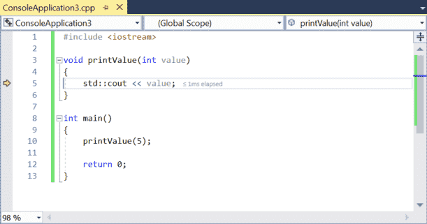
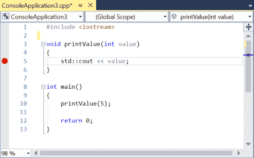
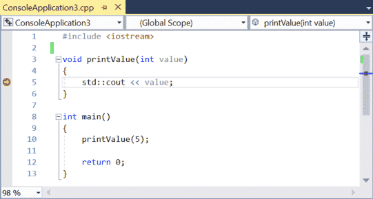

3.7 — Utilisation d'un débogueur intégré : exécution et points d'arrêt
Le pas à pas (abordé dans la leçon 3.6 -- Utilisation d'un débogueur intégré : pas à pas) est utile pour examiner chaque ligne de votre code isolément. Mais dans un programme de grande taille, il peut prendre beaucoup de temps de parcourir votre code pas à pas jusqu'à atteindre le point que vous souhaitez examiner en détail.
Heureusement, les débogueurs modernes proposent d'autres outils qui nous aident à déboguer nos programmes efficacement. Dans cette leçon, nous allons découvrir certaines fonctionnalités du débogueur qui permettent de naviguer plus rapidement dans notre code.
Exécuter jusqu'au curseur
La première commande utile est généralement appelée Exécuter jusqu'au curseur (Run to cursor). Cette commande Exécuter jusqu'au curseur exécute le programme jusqu'à ce que l'exécution atteigne l'instruction sélectionnée par votre curseur. Elle vous rend alors le contrôle afin que vous puissiez déboguer à partir de ce point. C'est un moyen efficace de commencer le débogage à un endroit précis de votre code, ou, si le débogage est déjà en cours, de vous rendre directement à un endroit que vous souhaitez examiner plus en détail.
Pour les utilisateurs de Visual Studio
Dans Visual Studio, la commande Exécuter jusqu'au curseur est accessible en cliquant droit sur une instruction de votre code puis en choisissant Exécuter jusqu'au curseur dans le menu contextuel, ou en appuyant sur la combinaison de touches Ctrl+F10.
Pour les utilisateurs de Code::Blocks
Dans Code::Blocks, la commande Exécuter jusqu'au curseur est accessible en cliquant droit sur une instruction de votre code puis en choisissant Run to cursor dans le menu contextuel ou Menu Debug > Run to cursor, ou en appuyant sur la touche F4.
Pour les utilisateurs de VS Code
Dans VS Code, la commande Exécuter jusqu'au curseur est accessible pendant le débogage d'un programme en cliquant droit sur une instruction de votre code puis en choisissant Run to Cursor dans le menu contextuel.
Essayons avec le même programme que nous utilisons depuis le début :
#include <iostream>
void printValue(int value)
{
std::cout << value << '\n';
}
int main()
{
printValue(5);
return 0;
}
Faites simplement un clic droit n'importe où sur la ligne 5, puis choisissez « Run to cursor ».

Vous remarquerez que le programme démarre et que le marqueur d'exécution se déplace jusqu'à la ligne que vous venez de sélectionner. Votre programme a été exécuté jusqu'à ce point et attend maintenant vos prochaines commandes de débogage. De là, vous pouvez exécuter le programme pas à pas, exécuter jusqu'au curseur vers un autre emplacement, etc.
Si vous exécutez jusqu'au curseur vers un emplacement qui n'est jamais exécuté, la commande se contentera de faire tourner le programme jusqu'à sa fin.
Continuer
Une fois au milieu d'une session de débogage, vous pouvez vouloir simplement poursuivre l'exécution du programme à partir de ce point. Le moyen le plus simple est d'utiliser la commande continuer (continue). La commande de débogage continue poursuit simplement l'exécution normale du programme, jusqu'à la fin du programme ou jusqu'à ce qu'un événement vous rende à nouveau le contrôle (par exemple un point d'arrêt, que nous verrons plus loin dans cette leçon).
Pour les utilisateurs de Visual Studio
Dans Visual Studio, la commande continuer est accessible pendant le débogage d'un programme via Menu Déboguer > Continuer, ou en appuyant sur la touche F5.
Pour les utilisateurs de Code::Blocks
Dans Code::Blocks, la commande continuer est accessible pendant le débogage d'un programme via Menu Debug > Start / Continue, ou en appuyant sur la touche F8.
Pour les utilisateurs de VS Code
Dans VS Code, la commande continuer est accessible pendant le débogage d'un programme via Menu Exécuter > Continuer, ou en appuyant sur la touche F5.
Testons la commande continuer. Si le marqueur d'exécution n'est pas déjà à la ligne 5, exécutez jusqu'au curseur jusqu'à la ligne 5. Choisissez ensuite continuer à partir de ce point. Votre programme终mine son exécution puis se termine.
Démarrer
La commande continuer a un frère jumeau nommé démarrer (start). La commande démarrer effectue la même action que continuer, mais en partant du début du programme. Elle ne peut être invoquée que lorsqu'aucune session de débogage n'est en cours.
Pour les utilisateurs de Visual Studio
Dans Visual Studio, la commande démarrer est accessible lorsque le programme n'est pas en cours de débogage via Menu Déboguer > Démarrer le débogage, ou en appuyant sur la touche F5.
Pour les utilisateurs de Code::Blocks
Dans Code::Blocks, la commande démarrer est accessible lorsque le programme n'est pas en cours de débogage via Menu Debug > Start / Continue, ou en appuyant sur la touche F8.
Pour les utilisateurs de VS Code
Dans VS Code, la commande démarrer est accessible lorsque le programme n'est pas en cours de débogage via Menu Exécuter > Démarrer le débogage, ou en appuyant sur la touche F5.
Si vous utilisez la commande démarrer sur le programme ci-dessus, celui-ci s'exécutera jusqu'au bout sans interruption (sauf sous VS Code, car nous avons défini stopAtEntry: true dans la leçon précédente). Cela peut sembler anodin, mais c'est seulement parce que nous n'avons pas encore demandé au débogueur d'interrompre le programme. Nous mettrons cette commande à meilleure profit dans la section suivante.
Points d'arrêt
Le dernier sujet abordé dans cette section concerne les points d'arrêt. Un point d'arrêt (breakpoint) est un marqueur spécial qui indique au débogueur d'interrompre l'exécution du programme à cet endroit lorsque le programme s'exécute en mode débogage.
Pour les utilisateurs de Visual Studio
Dans Visual Studio, vous pouvez ajouter ou supprimer un point d'arrêt via Menu Déboguer > Activer/désactiver le point d'arrêt, ou en faisant un clic droit sur une instruction puis en choisissant Activer/désactiver le point d'arrêt dans le menu contextuel, ou en appuyant sur la touche F9, ou en cliquant à gauche du numéro de ligne (dans la zone gris clair).
Pour les utilisateurs de Code::Blocks
Dans Code::Blocks, vous pouvez ajouter ou supprimer un point d'arrêt via Menu Debug > Toggle breakpoint, ou en faisant un clic droit sur une instruction puis en choisissant Toggle breakpoint dans le menu contextuel, ou en appuyant sur la touche F5, ou en cliquant à droite du numéro de ligne.
Pour les utilisateurs de VS Code
Dans VS Code, vous pouvez ajouter ou supprimer un point d'arrêt via Menu Exécuter > Activer/désactiver le point d'arrêt, ou en appuyant sur la touche F9, ou en cliquant à gauche du numéro de ligne.
Lorsque vous ajoutez un point d'arrêt, une nouvelle icône apparaît. Visual Studio utilise un cercle rouge, Code::Blocks utilise un octogone rouge (comme un panneau stop) :

Allez-y et placez un point d'arrêt sur la ligne 5, comme indiqué sur l'image ci-dessus.
Choisissez maintenant la commande Démarrer pour que le débogueur exécute votre code, et observons le point d'arrêt en action. Vous remarquerez qu'au lieu d'aller jusqu'au bout du programme, le débogueur s'arrête au point d'arrêt (le marqueur d'exécution se trouve alors sur l'icône du point d'arrêt) :

C'est exactement comme si vous aviez exécuté jusqu'au curseur jusqu'à ce point.
Les points d'arrêt présentent quelques avantages par rapport à exécuter jusqu'au curseur. D'abord, un point d'arrêt rend le contrôle au débogueur à chaque fois qu'il est atteint (contrairement à exécuter jusqu'au curseur, qui ne va jusqu'au curseur qu'une seule fois à chaque invocation). Ensuite, un point d'arrêt persiste jusqu'à ce que vous le supprimiez, alors qu'avec exécuter jusqu'au curseur vous devez retrouver l'emplacement voulu à chaque fois que vous invoquez la commande.
Notez que les points d'arrêt placés sur des lignes qui ne sont pas sur le chemin d'exécution n'interrompront pas l'exécution du code.
Examinons un programme légèrement modifié qui illustre mieux la différence entre les points d'arrêt et exécuter jusqu'au curseur :
#include <iostream>
void printValue(int value)
{
std::cout << value << '\n';
}
int main()
{
printValue(5);
printValue(6);
printValue(7);
return 0;
}
Commencez d'abord une nouvelle session de débogage, puis exécutez jusqu'au curseur jusqu'à la ligne 5. Choisissez ensuite continuer. Le programme ira jusqu'à la fin (il ne s'arrêtera pas à nouveau à la ligne 5, bien que cette ligne soit exécutée deux fois de plus).
Placez ensuite un point d'arrêt sur la ligne 5, puis choisissez démarrer. Le programme s'arrête à la ligne 5. Choisissez continuer : le programme s'arrête à la ligne 5 une deuxième fois. Choisissez continuer à nouveau, et il s'arrêtera une troisième fois. Encore un continuer, et le programme se termine. Vous pouvez voir que le point d'arrêt a interrompu le programme autant de fois que cette ligne a été exécutée.
Définir l'instruction suivante
Il existe une dernière commande de débogage, assez peu utilisée, mais qu'il est utile de connaître, même si vous ne l'utiliserez pas souvent. La commande définir l'instruction suivante (set next statement) nous permet de modifier le point d'exécution pour le placer sur une autre instruction (on parle parfois informellement de saut). Cela permet de faire avancer le point d'exécution pour sauter du code qui serait sinon exécuté, ou de revenir en arrière pour faire réexécuter une instruction déjà exécutée.
Pour les utilisateurs de Visual Studio
Dans Visual Studio, vous pouvez déplacer le point d'exécution en faisant un clic droit sur une instruction puis en choisissant Définir l'instruction suivante dans le menu contextuel, ou en appuyant sur la combinaison Ctrl+Maj+F10. Cette option est contextuelle et n'apparaît que pendant le débogage d'un programme.
Pour les utilisateurs de Code::Blocks
Dans Code::Blocks, vous pouvez déplacer le point d'exécution via Menu Debug > Set next statement, ou en faisant un clic droit sur une instruction puis en choisissant Set next statement dans le menu contextuel. Code::Blocks ne dispose pas de raccourci clavier pour cette commande.
Pour les utilisateurs de VS Code
Dans VS Code, vous pouvez déplacer le point d'exécution en faisant un clic droit sur une instruction puis en choisissant Jump to cursor dans le menu contextuel. Cette option est contextuelle et n'apparaît que pendant le débogage d'un programme.
Observons d'abord le saut vers l'avant :
#include <iostream>
void printValue(int value)
{
std::cout << value << '\n';
}
int main()
{
printValue(5);
printValue(6);
printValue(7);
return 0;
}
Commencez par exécuter jusqu'au curseur jusqu'à la ligne 11. À ce stade, vous devriez voir la valeur 5 dans la fenêtre de sortie de la console.
Faites maintenant un clic droit sur la ligne 12 et choisissez définir l'instruction suivante. Cela fait sauter la ligne 11, qui ne sera donc pas exécutée. Choisissez ensuite continuer pour terminer l'exécution de votre programme.
La sortie de votre programme doit être la suivante :
5
7
On constate que printValue(6) a été sautée.
Cette fonctionnalité peut être utile dans plusieurs contextes.
Lors de notre exploration des techniques de débogage de base, nous avons évoqué le fait de commenter une fonction pour déterminer si elle joue un rôle dans l'apparition d'un problème. Cela nécessite de modifier le code, et de penser à le décommenter ensuite. Dans le débogueur, il n'existe pas de moyen direct d'ignorer une fonction ; si vous souhaitez le faire, utiliser définir l'instruction suivante pour sauter un appel de fonction est le moyen le plus simple.
Le saut vers l'arrière peut aussi être utile si nous voulons observer une fonction qui vient de s'exécuter se réexécuter, afin de voir ce qu'elle fait.
Avec le même code que ci-dessus, exécutez jusqu'au curseur jusqu'à la ligne 12. Puis définissez l'instruction suivante sur la ligne 11, et continuez. La sortie du programme doit être :
5
6
6
7
Attention
La commande définir l'instruction suivante modifie le point d'exécution, mais ne modifie pas autrement l'état du programme. Vos variables conservent les valeurs qu'elles avaient avant le saut. En conséquence, un saut peut amener votre programme à produire des valeurs, des résultats ou des comportements différents de ceux qu'il aurait eus autrement. Utilisez cette capacité avec discernement (surtout lors des sauts vers l'arrière).
Attention
Vous ne devez pas utiliser définir l'instruction suivante pour déplacer le point d'exécution vers une autre fonction. Cela peut entraîner un comportement indéfini, et très probablement un plantage.
« Pas en arrière » ou saut vers l'arrière via « Définir l'instruction suivante »
Le « pas en arrière » (step back) rembobine l'état de tout, comme si vous n'étiez jamais allé au-delà de ce point. Toute modification de la valeur des variables ou de tout autre état du programme est annulée. C'est essentiellement une commande « annuler » pour le pas à pas.
Définir l'instruction suivante, lorsqu'elle est utilisée pour revenir en arrière, modifie uniquement le point d'exécution. Les modifications de valeurs de variables ou de tout autre état du programme ne sont pas annulées.
Conclusion
Vous connaissez maintenant les principales manières d'utiliser un débogueur intégré pour observer et contrôler l'exécution de votre programme. Si ces commandes sont utiles pour diagnostiquer des problèmes de flux d'exécution (par exemple pour déterminer si certaines fonctions sont appelées ou non), elles ne représentent qu'une partie des avantages qu'apporte le débogueur intégré. Dans la prochaine leçon, nous commencerons à explorer d'autres moyens d'examiner l'état de votre programme, pour lesquels ces commandes vous seront nécessaires. Allons-y !
Source originale : https://www.learncpp.com/cpp-tutorial/using-an-integrated-debugger-running-and-breakpoints/